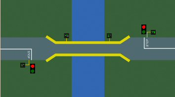

Schemat D. 
|
||||||||||||
Obiekt ten przedstawia sytuacjê, gdy na dwukierunkowej drodze wystêpuje zwê¿enie jezdni (w tym wypadku jest to w±ski most). ¦wiat³a dla kierunku jazdy w prawo sterowane s± za pomoc± Z1 (0 - czerwone, 1 - zielone), a dla kierunku jazdy w lewo za pomoc± Z2 (0 - czerwone, 1 - zielone). Na trasie umieszczone s± czujniki ruchu: X1 (dla pojazdów jad±cych w lewo), X2 (dla pojazdów jad±cych w prawo) oraz X3 i X4 (dla obu kierunków jazdy). Ramka danych wyj¶ciowych (stan obiektu).
Ramka danych wej¶ciowych (steruj±cych).
Sterowanie klawiatur±. |
||||||||||||